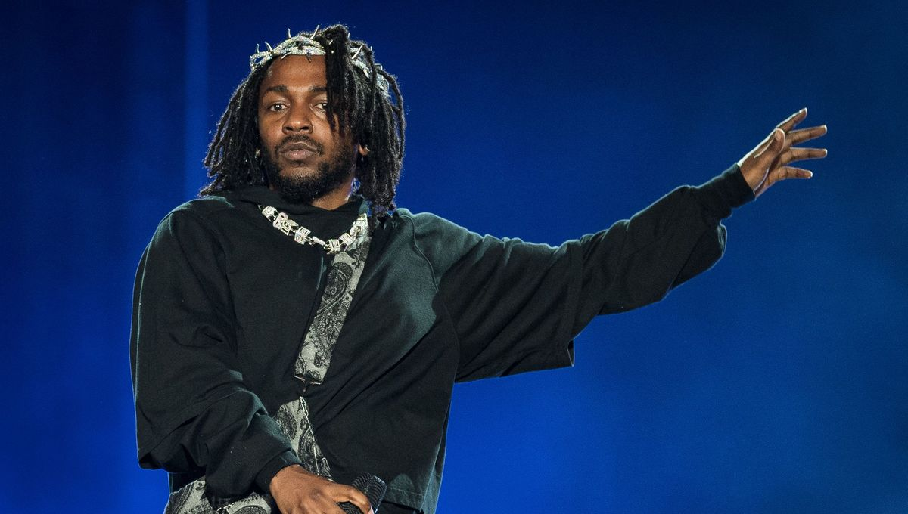

Kendrick Lamar, de son nom complet Kendrick Lamar Duckworth (prononcé : /kɛndɹɪk ləˈmɑː dʌkˌwɜːθ/), né le 17 juin 1987 à Compton, en Californie,
est un rappeur, chanteur, parolier, réalisateur artistique et acteur américain. Souvent considéré comme l'un des plus grands rappeurs de tous les temps, il est le seul musicien, en dehors des genres classique et jazz, à avoir reçu le prix Pulitzer de la musique. Les critiques estiment généralement que son infusion régulière de critiques politiques et de commentaires sociaux a influencé l'émergence d'une conscience sociale au sein de sa génération. Il a été à de nombreuses reprises qualifié comme le « nouveau Roi du Hip-hop »

liens vers son spotify
- section 80
- to pimp a buutrfly
- good kid maad city
- Damn
- mr morale and the big steppers